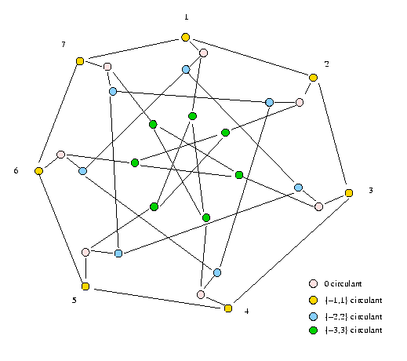
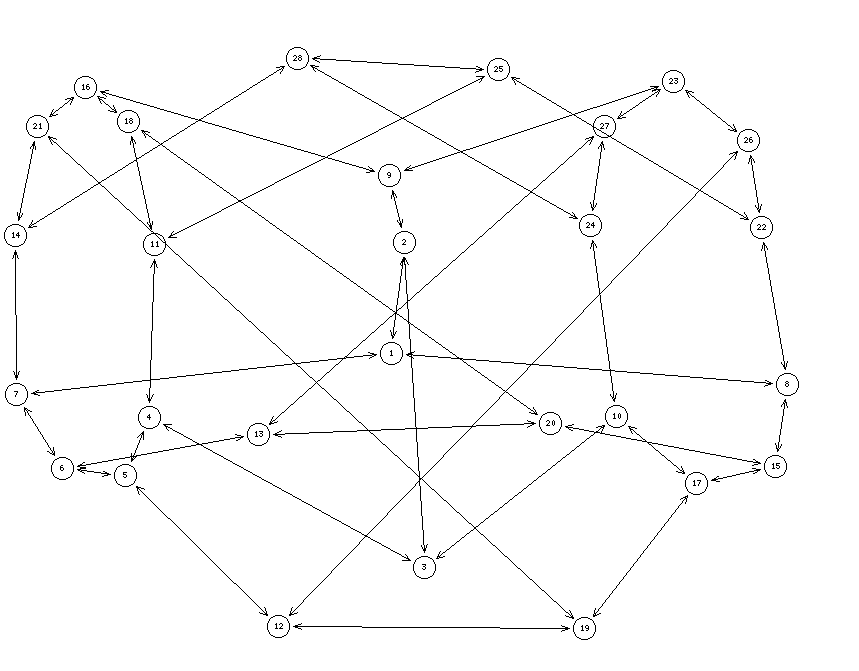

Arc-transitive (symmetric) graph
Kernel equation system solution space symmetries, conjecture on kernel numbers, clustering
The Coxeter graph is a famous 28-vertex cubic graph with girth seven. It is constructed from X = {1,2,3,4,5,6,7} and its circulants {-1,1}, {-2,2} and {-3,3}.
The Coxeter graph is in fact a remarquable subgraph of the Kneser graph J(7,3,0) of order 35, hence its natural similarity with the Petersen graph who is the corresponding J(5,2,0) graph. These kinds of graph appear when taking the dual of a similarity relation, a situation we naturally have to tackle in clustering problems.
The Coxeter graph supports 1562 different kernels, among them obviously the minimal set of 0-circulant (pink coloured) nodes of cardinality 7.
W should find anough symmetry in the Coxeter graph such that the symmetry congruence classes induced on the kernel equation system solution space is less or equal 28, i.e. the order of the graph.
Indeed, the unlabelled kernel number of the Coxeter graph is 13.
The nauty program, a software package for computing the automorhism group of a graph, reveals us that the Coxeter graph supports four automorphic actions: three bilateral symmteric foldings with each time four fixed nodes, and an obvious 7 steps central rotational symmetry k_i to (k+j)_i, with k,j in Z7 and i = 0 (circulant {-1,1}), 1 (circulent {0,0}), 2 (circulent {-2,2}), and 3 (circulent {-3,3}). The total order of the automorphism group generated with these actions is 336.
In the figure below we illustrate one the three bilateral foldings where the nodes are enumerated continuously from 1 to 28 in increasing order of the four circulants {-1,1}: 1-7, {0,0}: 8-14, {-2,2}: 15-20 and {-3,3}: 21-28.
The four generators of the Coxeter automorphism group map on the kernel equation system solution space 13 disjoint orbits with the following representatively labelled choices, in increasing cardinalities of the choice and the corresponding orbit:
| # | Choice | Choice cardinality | Orbit cardinality |
|---|---|---|---|
| 1 | ['3_0', '5_0', '6_0', '1_0', '2_0', '4_0', '7_0'] | 7 | 8 |
| 2 | ['3_2', '6_3', '2_1', '5_3', '5_1', '1_0', '4_2', '4_3', '7_0'] | 9 | 56 |
| 3 | ['3_3', '3_2', '6_2', '2_1', '2_3', '5_1', '1_3', '4_0', '7_1', '7_2'] | 10 | 28 |
| 4 | ['3_3', '6_0', '2_1', '5_3', '5_2', '1_0', '4_2', '4_3', '4_1', '7_0'] | 10 | 56 |
| 5 | ['3_1', '3_2', '6_0', '2_0', '5_0', '1_3', '1_1', '4_0', '7_3', '7_2'] | 10 | 56 |
| 6 | ['3_0', '6_0', '2_1', '2_3', '5_2', '1_2', '4_2', '4_3', '4_1', '7_1'] | 10 | 84 |
| 7 | ['3_0', '6_3', '2_0', '5_3', '5_1', '1_2', '4_2', '7_1', '7_3', '7_2'] | 10 | 84 |
| 8 | ['3_3', '6_0', '2_1', '5_3', '5_2', '1_2', '4_2', '4_3', '4_1', '7_1'] | 10 | 168 |
| 9 | ['3_0', '6_0', '2_1', '2_2', '5_3', '5_2', '5_1', '1_2', '4_0', '7_0'] | 10 | 168 |
| 10 | ['3_3', '3_2', '6_0', '2_1', '2_3', '5_1', '1_0', '4_2', '4_3', '7_0'] | 10 | 336 |
| 11 | ['3_0', '6_0', '2_0', '5_2', '5_1', '1_3', '1_2', '1_1', '4_0', '7_3'] | 10 | 336 |
| 12 | ['3_1', '3_2', '6_1', '6_2', '6_3', '2_0', '5_3', '1_0', '4_0', '7_3', '7_2'] | 11 | 168 |
| 13 | ['3_1', '3_3', '6_0', '2_2', '2_3', '5_2', '5_1', '1_3', '1_2', '1_1', '4_0', '7_0'] | 12 | 14 |